CO2 Global Emissions Analysis
Executive Summary
This project reproduces an R-based CO2 emissions analysis in Python using a fully automated and reproducible workflow.
The project downloads data from the Our World in Data repository, cleans and transforms the dataset, generates visualizations, performs regression analysis, and creates automated reports.
The results indicate a positive relationship between GDP per capita and CO2 emissions per capita. The regression model shows that GDP per capita explains approximately 56% of the variation in CO2 emissions per capita.
Project Goal
The goal of this project is to reproduce the main ideas of an existing R-based CO2 emissions analysis in Python.
The project focuses on:
- Data acquisition
- Data cleaning
- Data visualization
- Regression analysis
- Automated report generation
- Reproducibility using Docker
Dataset
The project uses the Our World in Data CO2 dataset.
The dataset includes information about:
- CO2 emissions
- CO2 emissions per capita
- GDP
- Population
- Cumulative CO2 emissions
- Share of global CO2 emissions
Data Preparation
Before analysis, the raw dataset was cleaned and transformed.
The following preprocessing steps were performed:
- Observations before 1960 were removed.
- Missing GDP values were removed.
- Missing CO2 per capita values were removed.
- Invalid population records were excluded.
- GDP per capita was calculated.
- Relevant columns were selected and renamed.
The cleaned dataset was saved as:
data/processed/co2_clean.csvWorkflow
The project workflow follows a reproducible pipeline:
- Download the dataset
- Clean and prepare the data
- Generate visualizations
- Run regression analysis
- Generate Markdown and HTML reports
- Execute the full workflow inside Docker
Visualizations
1. Global Average CO2 per Capita Over Time
This figure shows the evolution of average CO2 emissions per capita over time.
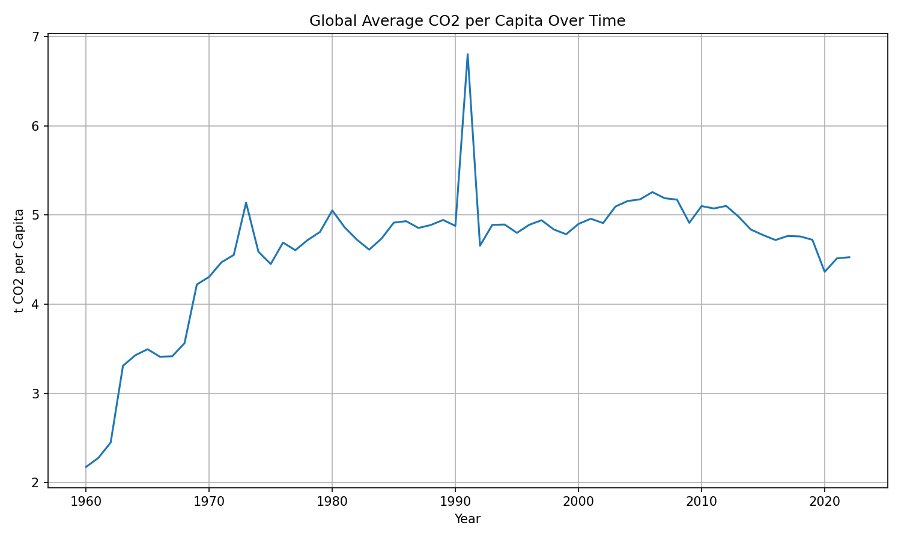
2. GDP per Capita vs CO2 per Capita
This visualization shows the relationship between economic development and carbon emissions. Countries with higher GDP per capita generally tend to emit more CO2 per person.
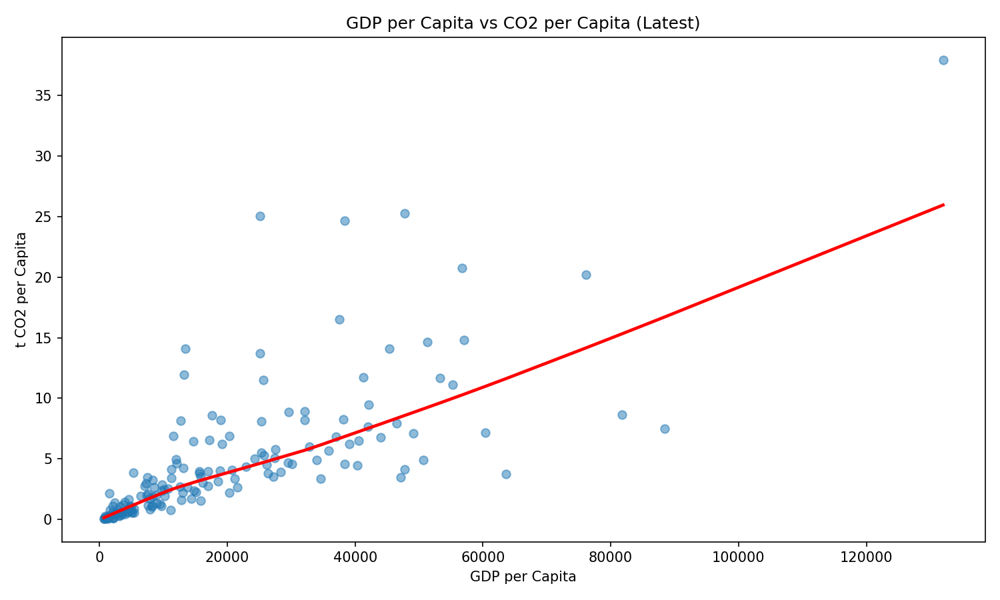
3. Linear Regression Plot
This plot visualizes the fitted linear relationship between GDP per capita and CO2 emissions per capita.
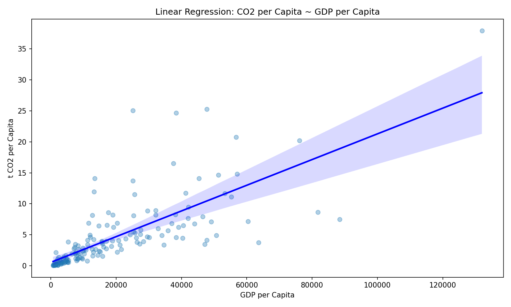
4. Top 10 Countries by CO2 per Capita
This chart highlights the countries with the highest CO2 emissions per person in the latest available data.
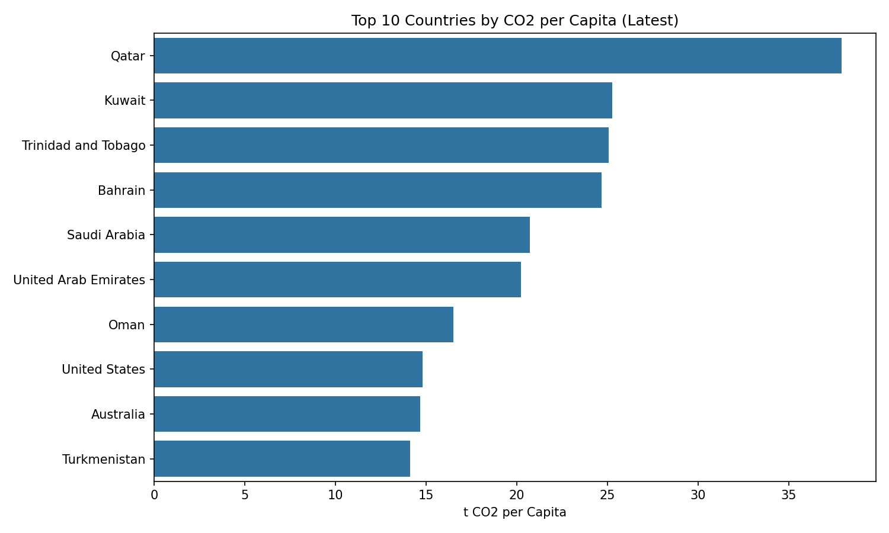
5. CO2 per Capita Over Time for Top 5 Countries
This figure shows how CO2 emissions per capita changed over time for the top countries in the dataset.
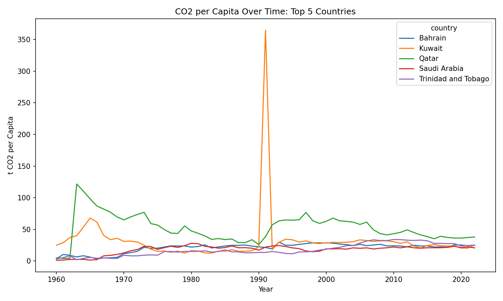
6. CO2 per Capita by GDP Quartile Boxplot
This boxplot compares emissions across GDP-per-capita quartiles.
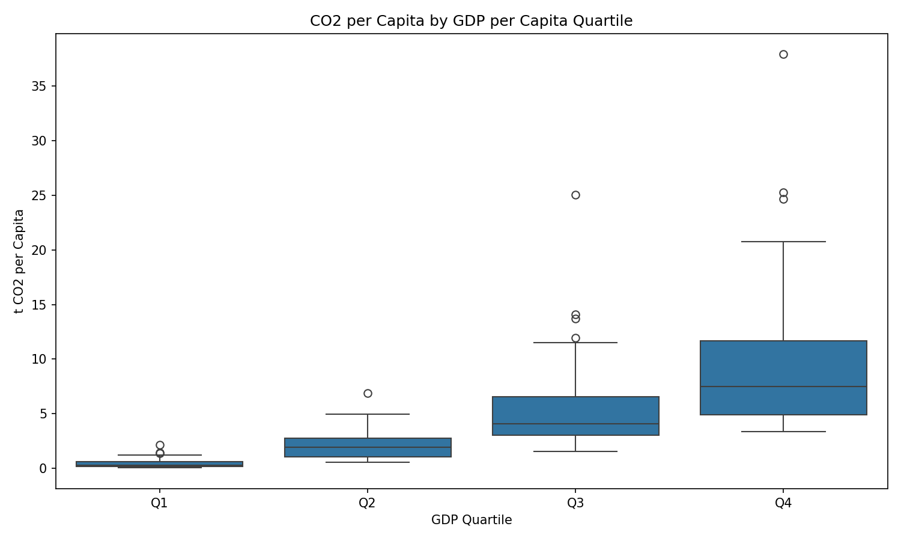
7. CO2 per Capita by GDP Quartile Violin Plot
This violin plot shows the distribution of CO2 emissions per capita across GDP groups.
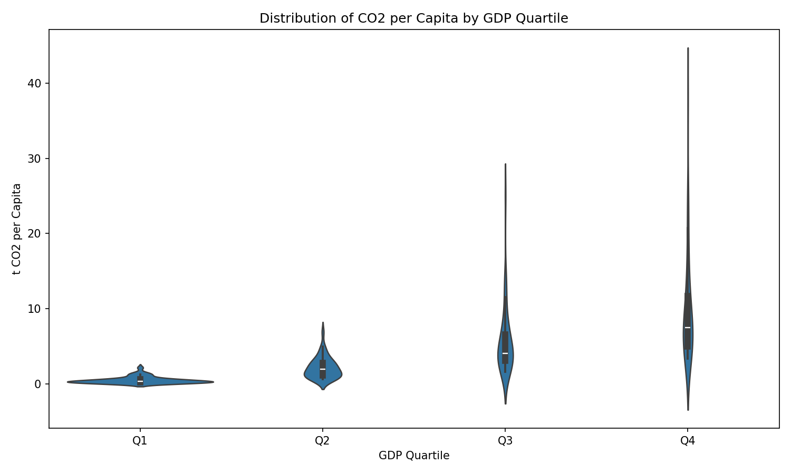
8. Heatmap of Average CO2 per Capita by Year and GDP Quartile
This heatmap shows how average emissions differ across GDP quartiles and years.
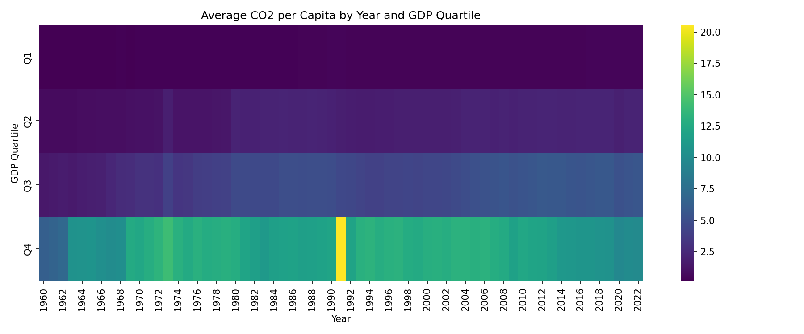
9. Cumulative Sum of CO2 per Capita
This figure shows the cumulative development of CO2 emissions per capita over time.
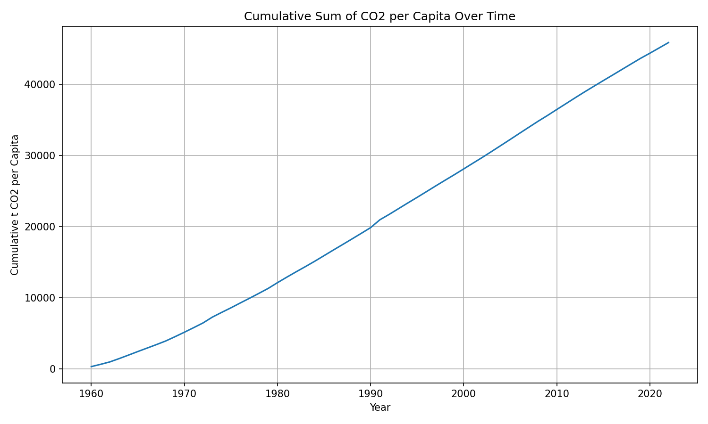
10. Year-over-Year Change in Global Average CO2 per Capita
This chart shows annual percentage changes in global average CO2 emissions per capita.
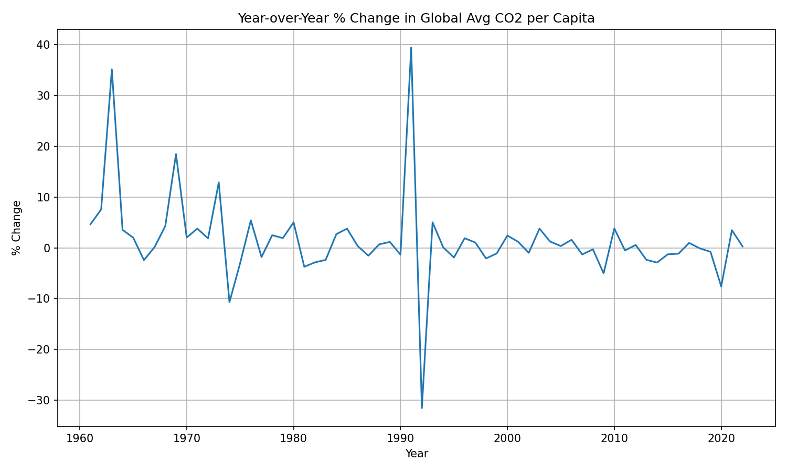
11. CO2 per Capita vs Total CO2 Emissions
This visualization compares per-capita emissions with total CO2 emissions.
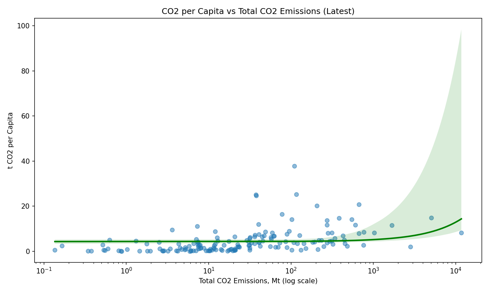
Regression Analysis
To quantify the relationship observed in the visualizations, a linear regression model was estimated.
The model is:
CO2 per capita ~ GDP per capitaThe detailed regression output is saved in:
outputs/tables/regression_summary.txtKey Regression Findings
- The coefficient for GDP per capita is positive.
- The relationship is statistically significant.
- The model achieved an R-squared value of approximately 0.556.
This means that GDP per capita explains approximately 56% of the variation in CO2 emissions per capita.
Reproducibility
The project can be reproduced locally using:
make allThe project can also be reproduced inside Docker using:
docker compose up --buildThe Docker container automatically:
- Downloads the dataset
- Cleans the data
- Generates visualizations
- Runs regression analysis
- Generates the Markdown report
- Renders the Quarto HTML report
The Docker image is also available on Docker Hub:
docker pull aykhansafarli/co2-emissions-python-rr-project:latest
docker run aykhansafarli/co2-emissions-python-rr-project:latestConclusion
This project successfully reproduced the main ideas of an existing R-based CO2 emissions analysis in Python.
The results suggest that economic development is positively associated with CO2 emissions per capita. The visualizations show substantial variation across countries and over time, while the regression analysis confirms a statistically significant positive relationship between GDP per capita and CO2 emissions per capita.
The project also demonstrates reproducible research practices through automated workflows, Python scripts, Quarto report generation, GitHub version control, Docker containerization, and Docker Hub deployment.